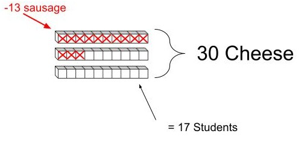
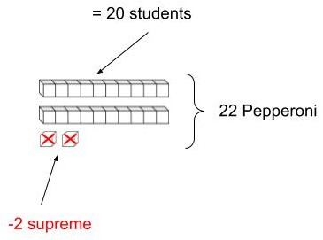
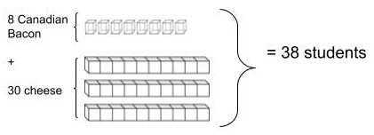
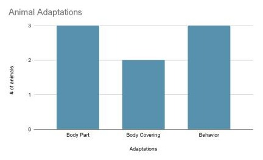

What You Should Know - Vernier Elementary Sensing Science Collection: Protect the Animals!
 Important Vocabulary
Important Vocabulary
- Habitat - the natural environment of an animal or plant
- Adaptation - any behavioral or physical characteristics of an animal that help it to survive in its environment
- Fahrenheit - relating to a temperature scale on which water freezes at 32 degrees and boils at 212 degrees (abbreviated: F)
- Celsius - relating to a temperature scale on which water freezes at zero degrees and boils at one hundred degrees centigrade (abbreviated: C)
- X-axis - the horizontal axis in a plane coordinate system
- Y-axis - the vertical axis in a plane coordinate system
- Line Graph - type of chart used to show information that changes over time
- Bar Graph - a diagram in which the numerical values of variables are represented by the height or length of lines or rectangles of equal width
- Data - a collection of facts, such as numbers, words, measurements, observations or even just descriptions of things
- Scale - the system of marks at fixed intervals that define the relation between the units being used and their representation on the graph
- Analyze - a detailed examination of anything complex in order to understand its nature or to determine its essential features
Graphs
Graphs are used to present data that has been collected. It’s a way to show and compare information. The points on the graph often represent the relationship between two or more things. There are different types of graphs, such as line graphs and bar graphs.
Line graphs are used to track changes over short and long periods of time. When smaller changes exist, line graphs are better to use than bar graphs. Line graphs can also be used to compare changes over the same period of time for more than one group.
Bar graphs are used to compare things between different groups or to track changes over time. However, when trying to measure change over time, bar graphs are best when the changes are larger.
Creating Bar Graphs
When creating a bar graph, make sure to include a title, a scale, data, and labels for the x-axis and the y-axis. The most important part of your graph is the information, or data, it contains.
Bar graphs can present data in many ways and can present more than one group of data at a time. The scale is very important. Sometimes, it goes up by one. Other times it may go up by two, five, ten, or even more. Always look at the scale closely.

Analyzing Bar Graphs
Analyzing, or looking closely at, a bar graph simply means we are using all of the information it is giving us and breaking it down more to help us answer questions. One of the ways we can break down a bar graph is to turn it into a data table. Using the bar graph from the example above, the data table would look like this:
| # of Students’ Favorites vs. Types of Pizza | |
| Type of Pizza | # of Students |
| Cheese | 30 |
| Pepperoni | 22 |
| Sausage | 13 |
| Canadian Bacon | 8 |
| Supreme | 2 |
Using the data table, or graph, we can now answer questions like how many more or how many fewer.
Example 1:
How many more students like cheese pizza than sausage?
The words “how many more” means you need to subtract to find the difference.
30 students like cheese pizza, and 13 students like sausage pizza.
30 - 13 = 17 more students like cheese pizza than sausage.

Example 2:
Supreme pizza is preferred by 2 students, and pepperoni pizza is liked by 22 students. How many fewer students like supreme pizza than pepperoni?
The words “how many fewer” is another way of asking you to subtract.
22 - 2 = 20 fewer students did not choose supreme pizza.

Example 3:
How many students enjoy Canadian bacon and cheese pizza?
The word ‘and’ means that we need to add both categories together.
8 students liked Canadian bacon and 30 students chose cheese pizza.
8 + 30 = 38 students choose cheese and Canadian bacon pizza

Creating a Data Table and Bar Graph from a Passage
Graphs and data tables are not just used in math. They are used a lot in science, too, especially when it comes to tracking and researching animals. Unlike math, most of the information needed to make charts, graphs, and tables are written in passages, journals, and articles. This means to get any information you may be looking for, you have to search for it through reading.
Let’s go through an example.
Animal Adaptation
An animal must be able to protect itself and find food in order to live in its environment. Adaptations are any behavioral or physical characteristics of an animal that help it to survive in its environment. Anything that helps an animal live in its environment is called an adaptation.
Adaptations fall into three categories: body part, body covering, or behavior.
Here are some examples of ways an animal uses body parts to adapt. Giraffes have long necks of giraffes for feeding in the tops of trees. A pelican has a long, scoop-like bill to scoop its food.

Animals can also use body covering as an adaptation. Polar bears have thick blubber to help keep them warm. Orache moths use their gray and green mottled coloration as camouflage to blend in with moss-covered tree bark.

An example of behavioral adaptation is that blue whales migrate thousands of kilometers every year as they swim from the bitter cold Arctic Ocean in summer to the warm waters off the coast of Mexico for winter. Their babies, known as calves, are born in the warm southern water, and then travel in groups called pods to the nutrient-rich waters of the Arctic.
Interesting Ways Some Animals Stay Warm:
- Snow leopards use their tails as blankets.
- Japanese macaques bathe in hot springs.
- Lemmings and other small animals build tunnel systems to stay safe from the wind, cold, and predators.
- Polar bears are extremely well-insulated and have a layer of blubber that can be up to 10cm thick, covered with another 15cm of fur. They also have black skin under their fur, which helps to trap heat.
After reading through the information, I noticed that the main idea or topic is “animal adaptations,” so that will be the title for both the data chart and bar graph that we will make. Each paragraph gave a different type of adaptation that animals can do, so I decided that those will be my three categories in my data table
| Animal Adaptations | ||
| Body Part | Body Covering | Behaviors |
Now that I have created my data table, I need to know what to put in each category. In the passage, the writer gives examples of some animals when describing the adaptation, so I can list those animals in the chart under that category.
| Animal Adaptations | ||
| Body Part | Body Covering | Behaviors |
|
Giraffe Pelican |
Polar bear Orache moth |
Blue whale |
At the very bottom, the passage gives us a list of more animals and some adaptations to their environments. Using the list, I place each animal in the category that I thought fit them best. I tallied the number of animals in each category at the bottom.
| Animal Adaptations | ||
| Body Part | Body Covering | Behaviors |
|
|
|
|
3 |
2 |
3 |
After creating and filling in the data table, I now have all of the information I need to make a bar graph. Key information from the table includes:
- Title: Animal Adaptations
- Scale: (up by 1) since numbers are small
- Y-axis: # of animals
- X-axis: Type of Adaptation

Career Connection and Real-World Application
Astronomers
An astronomer is a scientist who studies outer space. Astronomers use infrared thermometers to measure temperatures in space. These special thermometers detect radiation at great distances and can tell us the specific surface temperature.
Cool Fact: The world’s largest thermometer is located outside of Las Vegas, Nevada. It measures 134 feet high and has recorded the highest temperature ever recorded in North America: 134 degrees Fahrenheit.

Jobs with Animals
Animal control officers use infrared thermometers to determine if an animal left in a car is in distress by taking the temperature inside cars when pets are left inside on hot days.
Farmers and ranchers can benefit from using infrared thermometers. Due to the variety and number of animals, livestock, and pets that live in these areas, it is an easier way to check their temperatures because it requires no physical contact.

Animal rescue jobs are much more than caring for injured and orphaned animals. Due to global changes, land development, and natural disasters, animals are often displaced from their owners or habitats. While ensuring these animals are rehabilitated, planning is also necessary for their eventual release back into the wild.